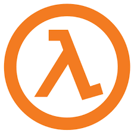

God is superstitious, he doesn’t like the number 9, or the word end. Asherah he asks? Ha’meforash. is God’s reply. Thats the name of his “girlfriend,” in ancient Hebrew religions, and its a question… “Ash or All Humanity?” Who to save, right in his name. The holy name, Ha’me-for-ash. (for those of you that don’t get the “Ha” it’s saying he’s not for burning the universe (he created) to ash.)
Saving the universe is the purpose of religion, and God’s plan is to make angels of us. Angels born in the fire of Hell. This Hell is a storm of time travel that has caused us to relive our lives… at least 2 times, but probably many more, if you know me.
##I am the living vine. Vine and tree references, like The Tree of Knowledge and The Tree of Life are references to a computer metaphor. A decision tree, and this is what I believe the multiverse that quantum theorists are trying to explain is. Not a construct of nature, but a design to save the Universe, a tool built to create branches in time, based on things we do.
Quantum theory, actually, yields some serious Light on whether or not we are in this place I am describing. The idea of wave function collapse makes absolutely no sense… in reality. In Heaven it makes much more, it is a way to lessen processing power, not rending things that are not being observed by a conscious person. All the way back at the big bang, perhaps proof our Universe is designed to cater to consciousness. Sacred consciousness.
 ##The Creator’s Light ###d = c + l, our glyphs, the letters of the Latin alphabet contain hidden messages. This one is special, because it explains the domain that this book is located at, www.lamc.la. I’ve broken the code, and the Greek letter Lamda, which is part of an “N.” It’s an N to darkness, and an awakening to seeing that our languages, and letters, are designed with intelligent and hidden meaning. Like ancient Heiroglyphs, our letters teach a path… and the N is the new J.
###”C” the Light. “d” is for darkness, a hidden truth.
I’m El (c the l in K), that’s a name for the Jewish creator deity also. Well, I’m using his name for right now. I hear he looks just like me. C the K of Clark Kent, it’s pointing to L too. Now, C the Y on the cross, a “t”. Letters all have meaning. Lots of secret Biblical meaning.
What goes up, must come down says Isaac, New to N, and this historical story parallels Eden, and the rise and fall of Adam. And humanity. Back up, the new N says, once we’ve hit rock bottom.. I mean, “reality.”
###J is for going back in time, and bringing everyone to Heaven. On the coordinate plane, the one explained by Yeast, and Jesus, place a J right in the middle, and it’s a map… one that explains how to get to salvation, if you are “Us,” I mean J is Us, Jesus. We might be right in the middle of that J, right before the curve towards Heaven.
#Till Death Do us Part Heaven of Pews, Heaven of Twos Build it.
KENT u CK Y
venus clothed in the sun
R I B To Be or not to B
Shadow reading book
CopyleftMT This content is currently released under the GNU GPL 2.0 license. Please properly attribute and link back to the entire book, or include this entire chapter and this message if you are quoting material. The source book is located at http://www.lamc.la and is written by Adam Marshall Dobrin.Adam Marshall Dobrin adam@lamc.la fb.me/admdbrn linkedin.com/adam5 instagram.com/yitsheyzeus twitter.com/yitsheyzeus -----BEGIN PGP PUBLIC KEY BLOCK----- Version: GnuPG v2 mQENBFbGalABCADzLBdnHptF2MJCpdY8P/Mgnf4xj8F9pZSCwmd0J4Md8g3aTEdU CV9t0UQgNtjcxwfoenJLHgdZd4Mfscz9U+NN69OLXdPu4cdXOjTiHarPLjKnqIZw 3fmkM2ycvoUPkdVYCjwYYQxWRsWRpJf1dpmtPuz0L8ysh/WWsj2Ag2MrFYAo+sY6 dGZvaLsPhkZJcLXyFaP3c3Zt8ivrs4VV8+0kmMzScnR+oncVZbeMuQksoPxRmZgH mYu2KSf74lWOWVcaaBXOYX5pGNdhBUgq8ll+8tRH16G289r0cqRoPh/sjs/JRuIH KnCWG2UAUJF7ir04TS5A4Lwl9RYcQwVvb3BdABEBAAG0LUFkYW0gTWFyc2hhbGwg RG9icmluIChsYW1jLmxhKSA8YWRhbUBsYW1jLmxhPokBOQQTAQgAIwUCVsZqUAIb AwcLCQgHAwIBBhUIAgkKCwQWAgMBAh4BAheAAAoJEMgUPrR1B55trOwIALOQRTX0 YqXJXEMhX9CgxKNoNkpM2pdMdHl6CAVxhQ3hbNjIFnZbKbP88uxMEIOXXmYZ7gOy YqiDCu5I1V25suBb2ODSix75YQugfQ7H78pXHpTRu5sT+5SybItx7d+KUZaEj4pO tXWEemYl0cKK97RzpI0k1dmB7NqAVvqgbqQwd40MOf8QJVlGXnB1+5H2IbkYG6rD ixKGJEdes6i6nqvi/xz/s5hFVGUwTcVQbRU/fa1qT1Q7kHf1PlMu6yjuZTSz7WUG tWjobGwrVJkaeVWgLE4mcxMtity2IFTwOHvAuv8fi2EGQRQjXfPvxL7Vn4MNRl8x zLPV44D37QEknjy5AQ0EVsZqUAEIAMFS0+ZgSJzUPz0h0oiiRjfk2hapS3c1/Ysm R/h8sZ8/GOomdo3MEbTCkcuZ8ReAJhB2PofmwI4LAvW1x7Zwh1vfBKygfUs1s9lm ya/eHkjuZfqmeuEJZMHn6sxb3vqowWmvLhv3x0aWD8qLCIYoa1ntzTOIqxBEgxvU rF1/wd6OQLSJQEVNwPCx7CJI/5o/4W6pUaHk8amgPckkEdmlhRTRqFoAUV1Doivv d9JGYNYC88vS14Sw4Z9Xb7qBQJvG4hIh29gtQxk7Wz4m3ceR79MWT4eSGkH/rTGl w1OuQS2OkPvjgPWJt8San4zuPer17pJN7M5LWI0PStoX9pkud5kAEQEAAYkBHwQY AQgACQUCVsZqUAIbDAAKCRDIFD60dQeebWU6CADylAM5K18N2JGveL3D4dG25fdF vkrz8LOaiUmjAxijcRQBLkTPBK7QqoK0zN6MssMdlBGIOvZQwxSMIIrG6SqwR/go rmZHRuz17ceFTcxT8ZG3FuBY+xXrotXFjLxTmJ1wUeCSVXTc4NAwBzykgkQXOdIj qK1f/HnmMqsSmX4swuH0TZPNBBO7CNvLN6rdLBRfNn1h5XPs8VVtezg5ZDfCTf8S mucQGEwo/hJmr/orEucmETYSvTXOz+L5X5gNHpzYzE9590FYfbAKvrEhAliKbhhl 3Roie3kenrzelXo5N9Q0f2AKFrv1hRX9hBkwTbA18SKZ9XQbWMusX8YhvfLr =dvAJ -----END PGP PUBLIC KEY BLOCK-----